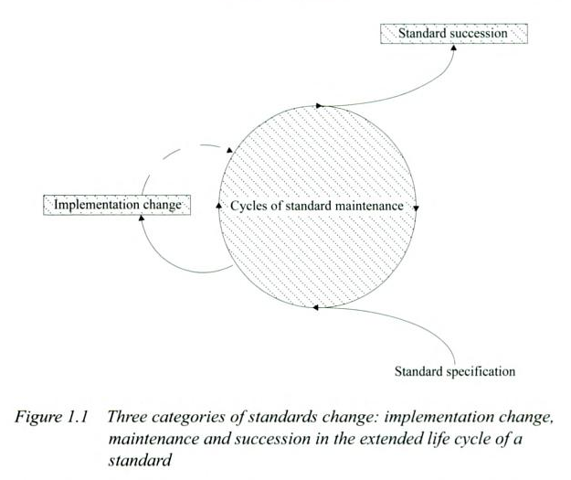

(2) Abstract
The Web is composed of standards: rules and practices to which technologies must adhere if they are to be considered part of the Web. Most of these standards are developed by standards bodies, organizations that publish documents defining Web technologies. But sometimes standards develop more organically, from technologies that become popular and are widely implemented without a formal process. However they arise, Web standards are critical for the existence of the Web, and they can have enormous economic and societal impact.
What are Standards?
(4) What is a standard?

- Originally: an object used as an example for measurement
- Abstractly: magnitude(s) of measurement, e.g. the metric system
- More generally: an example of correctness; an authoritative rule, principle, model, or way of doing something
(5) 2 kinds of standards
- Committee or de jure standards
- Standards "by law" or agreement
- De facto standards
- Standards "in fact" or reality
(6) De jure standards
- Established by consensus
- Approved by a recognized organization
- Provides rules, guidelines and characteristics
- Takes the form of a written document
- Intended for voluntary use (not a law or regulation)
- Goal is to minimize conflict, disorder, misunderstanding
Source: Egyedi & Blind,
[http://www.worldcat.org/oclc/181927876], 2-3.
(7) De facto standards
- Widely adopted practices or products
- Significant market share
- Copied, referred to, or depended upon by many other practices or products
- Sometimes de facto standards will be turned into de jure standards by a standards organization
Source: Egyedi & Blind,
[http://www.worldcat.org/oclc/181927876], 2-3.
(8) Standards Life Cycle

Source:Tineke M. Egyedi, Knut Blind,
[http://books.google.com/books?id=IXkX8WKG24gC]
(9) How standards are used
- To regulate behavior, e.g. for ensuring health
- To ensure fairness, e.g. accessibility guidelines
- To aid consistency, e.g. Pantone color codes
- To guide communication, e.g. disease classifications
- To enable products made by different groups to work together
(18) Next week: Filesystems & HTML
Next week we will begin looking at Web standards in detail, starting with HTML (the HyperText Markup Language). Before that, however, we need to cover the basics of filesystems and web servers.